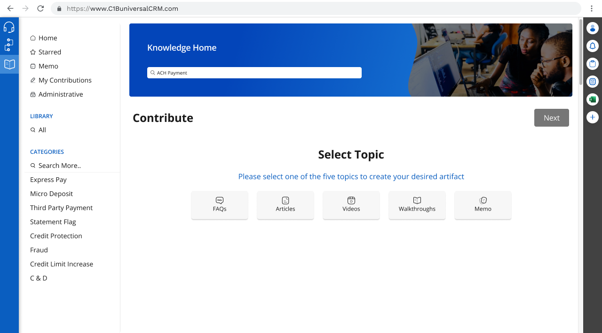
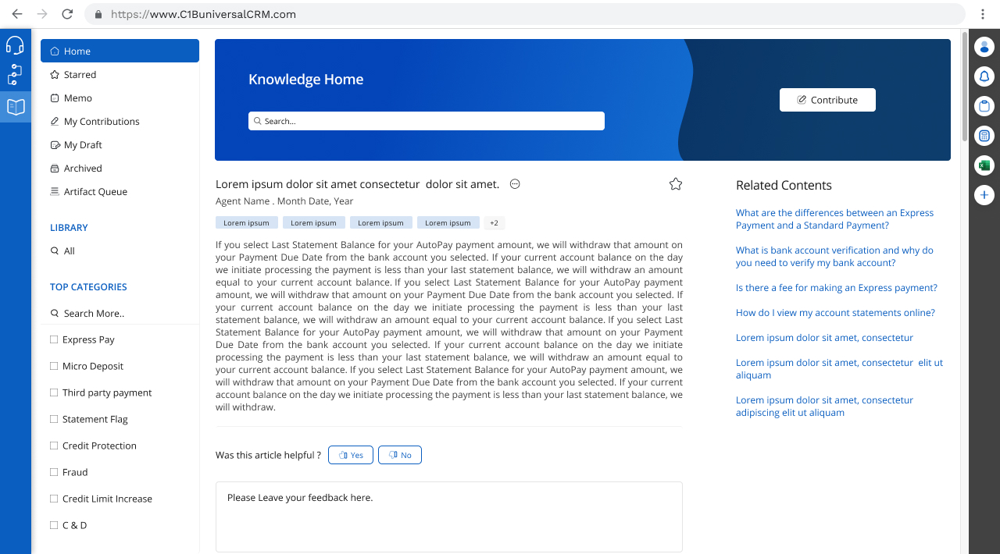
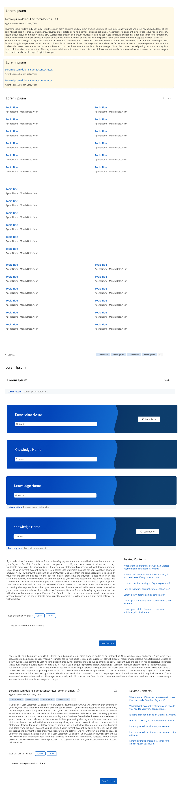
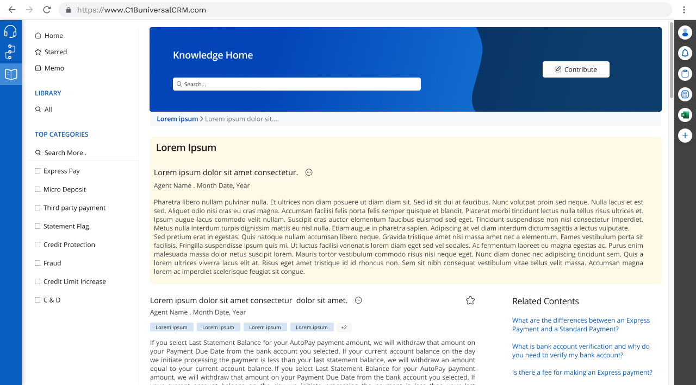

Knowledge Management System
Credit One Bank
A modern platform revolutionizing how company knowledge base and agent productivity is managed

A modern platform revolutionizing how company knowledge base and agent productivity is managed
UX/UI Designer
Knowledge Home, part of Credit One Bank’s Universal CRM Suite, transformed a fragmented knowledge base into a unified, scalable system. Initially a quick release, it evolved into a comprehensive redesign to serve call center agents, content managers, and administrators.
The goal was to create an intuitive platform that delivers instant access to information for agents handling real-time customer inquiries while enabling efficient content management and system oversight.

Knowledge Home: Centralized hub with search and category browsing
Credit One Bank needed a modern knowledge management system to handle diverse content types and improve agent efficiency under pressure.
Information Overload: Unstructured content overwhelmed agents
Time Pressure: Answers needed in seconds during calls
Stale Content: Outdated information led to errors
Format Constraints: No support for FAQs or videos
Reduce Call Time: Instant information access
Improve Accuracy: Consistent, up-to-date answers
Enable Self-Service: Content updates without IT
Scale Efficiently: Support new services

Visualizing the the desired work flow for the users
Comprehensive research uncovered user needs and system gaps.
Stakeholder Interviews: Defined requirements with managers and IT
Agent Observations: Shadowed live calls to identify pain points
Content Audit: Mapped existing content gaps
Competitive Analysis: Studied Zendesk, Salesforce Knowledge
Speed Critical: Answers needed in 5-10 seconds
Category Preference: Browsing favored for learning
Content Variety: FAQs for quick tasks, walkthroughs for complex
Missing Feedback: No way to flag outdated content
Demographics: 28 years old, call center agent for 2 years, handles 40-50 calls daily, comfortable with technology but stressed during busy periods.
Goals: Quickly find accurate information to help customers, maintain high quality scores, learn about new products and policies efficiently.
Pain Points: Wastes time searching multiple systems, uncertain which information is current, can't find answers fast enough while customers wait.
Quote: "I know the answer is somewhere in the system, but by the time I find it, the customer has been on hold for 3 minutes and is already frustrated with me."
Redesigned structure for instant content discovery.
Organized into categories (e.g., Express Pay, Fraud) with FAQs, articles, videos, walkthroughs, and memos.
Introduced FAQs, Articles, Videos, Walkthroughs, and Memos with tailored templates.

Paths for Creating an artifact
A system addressing pain points with simplicity and speed.
Prominent search bar with category filtering, prioritizing relevance.
Intuitive flow for creating FAQs, Articles, Videos, Walkthroughs, or Memos.
Article pages with formatting, media, and feedback options.
Tracks Drafts, Awaiting Approval, Published, and Rejected content.

Smart search for rapid information retrieval
Designed for specific tasks with consistent UX.
Central hub with search, featured content, and categories.
Sidebar with expandable categories and content counts.

Knowledge Home: Streamlined access to information
Clean pages with typography, media, and feedback.
Step-by-step creation with templates and media upload.

Article page with rich formatting and feedback
Balanced Universal CRM constraints with modern UX.
Speed First: Minimal clicks to content
Consistent Navigation: Persistent sidebar and search
Content-First: Clean layouts with clear typography
Clear Affordances: Descriptive buttons
Content Cards: Consistent across content types
Status Badges: Color-coded for content states
Category Tags: Filterable with hover states
Rich Text Editor: Supports diverse formatting

Reusable components for system consistency
Validated designs with real user feedback.
Task-Based Testing: 12 agents searched while thinking aloud
Content Creation: Managers tested workflows
A/B Testing: Compared search layouts with 50 users
Larger Search Bar: Increased prominence
Plain Language: Simplified category names
Feedback Loop: Added “Was this helpful?” buttons
"This is a game changer. I can find what I need in seconds instead of fumbling through multiple systems while the customer waits. It's made my job so much less stressful."
- Sarah K., Call Center Agent
"I love that I can contribute content when I discover new information. Before, I'd have to email IT and wait weeks. Now I can update it myself and help my whole team."
- Marcus T., Senior Agent
Significant gains in productivity and accuracy.
From 6+ min to ~2 min
In 3 months
Up from 54%
Of total content

Lessons from designing for high-pressure environments.
Speed-Focused: Minimized clicks to content
Phased Rollout: Iterated based on real data
User Empowerment: Contributions drove engagement
Design Constraints: Leveraged for consistency
Quality Control: Balanced with approvals
Diverse Needs: Integrated workflows
Designing for agents under time pressure taught me to prioritize speed and clarity. Working within the Universal CRM system’s constraints showed how limitations can accelerate decisions and ensure consistency. Shadowing agents built deep empathy, reinforcing that every click impacts real user stress and customer satisfaction.